Convolutions from scratch
Input: 384 × 512 grayscale · NumPy · same padding · zero fill
Signed derivatives: zero = gray; Dₓ and Dᵧ share a display scale.
Convolution is an operation where we slide a (reversed) 2D filter across an image and compute the weighted sum at each image pixel. Here I've implemented zero padded convolution with same size which means that we'll preserve the original image dimensions instead of doing a full convolution which would have dimensions N+K-1 (N is image width/height and K is kernel width/height) to cover every point of overlap between the image and kernel. The for loop version explicitly loops over everything, so this includes the image rows, image columns, kernel rows, and kernel columns. However, the two loop version will keep the image loops, but it uses NumPy multiplication and np.sum to calculate the weighted sum from the kernel for each patch. It's important that both of these implementations will flip the filter horizontally and vertically, as without the flip the operation would be cross-correlation and we lose the nice properties of associativity of convolution. The 9 by 9 box filter contains 81 equal weights of 1 over 81, so it averages a neighborhood and smooths detail. The DX row vector filter will measure horizontal intensity changes and thus emphasizes vertical edges, but its transpose, DY, measures vertical changes and thus emphasizes horizontal edges. However, since we're using zero padding, this has some implications when we do a convolution. For the box filter, the zeros will darken the image near its borders since it will do the weighted sum with some artificial zeros that we added. And for the derivatives, it can create potentially an artificial contrast with the outside, since the outside is zeros, and if the image also isn't near zero, then there will be an artificial contrast.
Code · four-loop and two-loop convolution
"""Part 1.1: NumPy-only convolution"""
import numpy as np
def convolve_four_loops(image, kernel):
image = np.asarray(image, dtype=np.float64)
kernel = np.asarray(kernel, dtype=np.float64)
height, width = image.shape
kernel_height, kernel_width = kernel.shape
# For even filters, the extra top/left zero matches SciPy's 'same' crop.
padding = (
(kernel_height // 2, (kernel_height - 1) // 2),
(kernel_width // 2, (kernel_width - 1) // 2),
)
padded = np.pad(image, padding, mode="constant", constant_values=0)
flipped = kernel[::-1, ::-1]
result = np.zeros((height, width), dtype=np.float64)
for row in range(height):
for col in range(width):
for kernel_row in range(kernel_height):
for kernel_col in range(kernel_width):
result[row, col] += (
padded[row + kernel_row, col + kernel_col]
* flipped[kernel_row, kernel_col]
)
return result
def convolve_two_loops(image, kernel):
image = np.asarray(image, dtype=np.float64)
kernel = np.asarray(kernel, dtype=np.float64)
height, width = image.shape
kernel_height, kernel_width = kernel.shape
padding = (
(kernel_height // 2, (kernel_height - 1) // 2),
(kernel_width // 2, (kernel_width - 1) // 2),
)
padded = np.pad(image, padding, mode="constant", constant_values=0)
flipped = kernel[::-1, ::-1]
result = np.zeros((height, width), dtype=np.float64)
for row in range(height):
for col in range(width):
patch = padded[row:row + kernel_height, col:col + kernel_width]
result[row, col] = np.sum(patch * flipped)
return resultCode · filters and SciPy comparison
box = np.ones((9, 9)) / 81
results = {}
for name, kernel in [("box_9x9", box), ("dx", dx), ("dy", dy)]:
print(name, flush=True)
start = perf_counter()
four = convolve_four_loops(image, kernel)
print("four loops:", perf_counter() - start, "seconds")
start = perf_counter()
two = convolve_two_loops(image, kernel)
print("two loops:", perf_counter() - start, "seconds")
start = perf_counter()
scipy_result = convolve2d(image, kernel, mode="same", boundary="fill", fillvalue=0)
print("scipy:", perf_counter() - start, "seconds")
print("four-loop max error:", np.max(np.abs(four - scipy_result)))
print("two-loop max error:", np.max(np.abs(two - scipy_result)), "\n")
results[name] = two| Filter | Four loops (ms) | Two loops (ms) | SciPy (ms) | Four-loop error | Two-loop error |
|---|---|---|---|---|---|
| 9 × 9 box | 3041.59 | 296.43 | 11.39 | 2.11e-15 | 7.77e-16 |
| Dₓ | 130.13 | 276.51 | 1.10 | 0.00e+00 | 0.00e+00 |
| Dᵧ | 150.38 | 279.31 | 2.00 | 0.00e+00 | 0.00e+00 |
All implementations agreed on the final result within floating point error. As for runtime, SciPy was consistently the fastest throughout all of the tested filters due to its internal optimization, however, the two-loop implementation was faster for the 9 by 9 box averaging filter, as moving the 81-element weighted sum for every pixel into NumPy helped substantially. But when the filter was the dx and dy operators, which are only three elements long, calling NumPy separately at every single pixel introduced enough overhead that the for-loop implementation was faster in this run, as it was less expensive to just loop through these three elements of the filter than to call a NumPy function.
Finite difference operator
Cameraman · symmetric boundary · threshold = 0.31 · no Gaussian blur
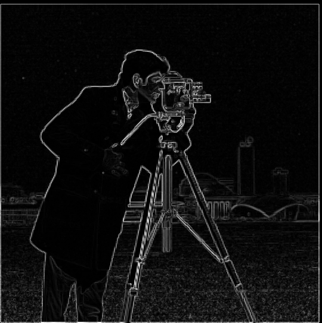
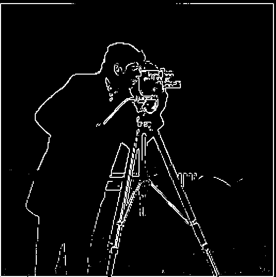
edges = |∇I| > 0.31
We convolve the grayscale cameraman directly with the Dx and Dy operators, and then we combine these two images to create a gradient magnitude image, which is the 2-norm or square root of Ix squared plus Iy squared as shown above. A large magnitude indicates a strong intensity change regardless of the direction, and we process the gradient magnitude image by binarizing it with whether the magnitude is greater than 0.31. This number was tuned by me, and I favored having less noise in this binarized gradient image than preserving 100% of the detail, because it ruins the signal of the binarized image if there are points with noise, and I feel like it's better to have a partially incomplete image that is more correct than to have an image with all the features of interest but also noise. So the tradeoff you have to do when deciding this factor is lowering the threshold will include weaker edges and a lot more texture, especially on the ground, while increasing the threshold will ignore important features in the cameraman's face and the camera itself. This part used symmetric padding instead of zero padding to reflect values across the border, which prevents the contrast artifacts happening at the edge of the image. However, the given image does have white edges included in the image, so this does show up as a gradient when taking the gradient magnitude and partially survives the binarization.
Code · finite differences and magnitude
gradient_x = convolve2d(image, dx, mode="same", boundary="symm")
gradient_y = convolve2d(image, dy, mode="same", boundary="symm")
magnitude = np.sqrt(gradient_x ** 2 + gradient_y ** 2)
threshold = 0.31
edges = magnitude > thresholdDerivative of Gaussian
Gaussian: 13 × 13 · σ = 2 · symmetric boundary · threshold = 0.11
Blur, then differentiate


First to do this part, I have to build a 2D Gaussian kernel, and I do this with getting a 1D Gaussian kernel from OpenCV, and then multiplying by its transpose to get an outer product to build the 2D Gaussian kernel. I chose a 13 by 13 Gaussian with sigma 2, which covers three standard deviations on either side of the center. I wanted a substantial difference from part 1.2, and sigma 2 gives more blurring than sigma 1. Since we apply the dx and dy operators on this blurred image, the gradient magnitudes generally become smaller because Gaussian smoothing suppresses rapid intensity changes. However, this helps because it allows for more continuous outlines around the person and tripod, and we can see in the gradient magnitude images that the edges are thicker and less intense. Because of this, we have to lower the threshold for this image, for this gradient magnitude image, and I ended up at around 0.11, using approximately the same intuitive reasoning as earlier. Here the images, the edges are a lot thicker and much more smooth across the person and the camera, but it also loses finer detail, such as edges around his mouth.
Combined DoG filters
(I ∗ G) ∗ Dᵧ = I ∗ (G ∗ Dᵧ)
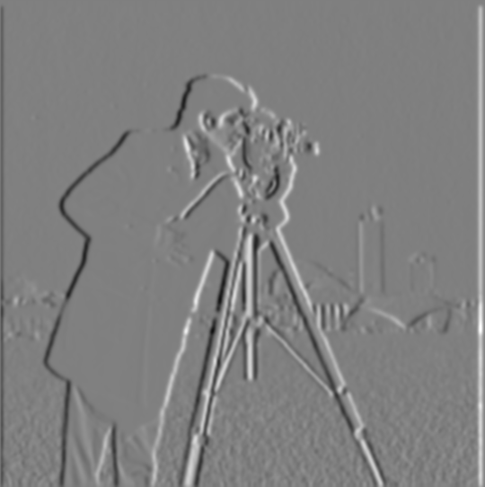
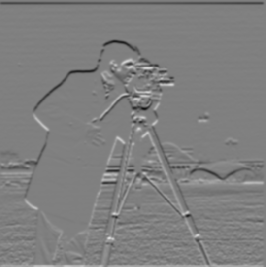
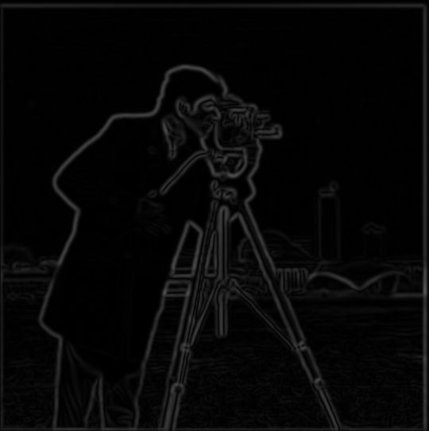
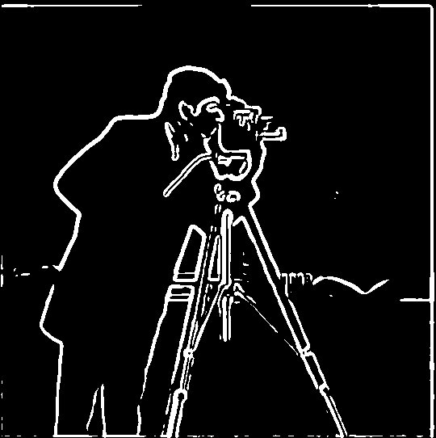
| Comparison | Maximum absolute difference |
|---|---|
| Dₓ | 1.034e-15 |
| Dᵧ | 9.684e-16 |
| Magnitude | 1.020e-15 |
| Binary edge maps | Identical |
Moreover, instead of doing two big convolutions with the image, we can instead convolve the Gaussian and the dx or dy operator before convolving it with the image. This is completely equivalent mathematically, as convolution is associative, as we said before, due to the flipping of the kernel. And practically, I show that these two methods agree within floating point error. However, it is important that when I'm convolving the Gaussian with the dx or dy operator, I use the full convolution, because I need to retain the entire combined kernel, so the kernel of the combined Gaussian with the dx operator will be bigger than both individually.
Code · two-step filtering and combined DoG
sigma = 2
kernel_size = 13
threshold_1_3 = 0.11
gaussian_1d = cv2.getGaussianKernel(kernel_size, sigma)
gaussian = np.outer(gaussian_1d, gaussian_1d)
blurred = convolve2d(image, gaussian, mode="same", boundary="symm")
blurred_dx = convolve2d(blurred, dx, mode="same", boundary="symm")
blurred_dy = convolve2d(blurred, dy, mode="same", boundary="symm")
blurred_magnitude = np.sqrt(blurred_dx ** 2 + blurred_dy ** 2)
# want the full thing when combining these filters
dog_x = convolve2d(gaussian, dx, mode="full")
dog_y = convolve2d(gaussian, dy, mode="full")
dog_dx = convolve2d(image, dog_x, mode="same", boundary="symm")
dog_dy = convolve2d(image, dog_y, mode="same", boundary="symm")
dog_magnitude = np.sqrt(dog_dx ** 2 + dog_dy ** 2)Image sharpening
RGB, per channel · Gaussian: 13 × 13 · σ = 2 · α ∈ {0.5, 1, 2, 4}
Convolving with a Gaussian kernel retains broad intensity changes but suppresses the fine detail as it is a low-pass filter. Thus, subtracting the blurred image from the original image should give the high frequencies in the image. Since images tend to look sharper with more high-frequency content, we can create a sharpening effect by taking the original image and then adding a small amount of this high-frequency version of the image with a parameter alpha. And in a similar vein as before, we can condense these three steps of taking the blurred image, subtracting it from the original image to get the high frequencies, and then adding that high frequency back to the original image into one filter that we can convolve with. We can do this by inspecting what this overall system is doing, and we simply will just convolve with the delta, which will return the original image, as well as the Gaussian to subtract out the low frequencies as detailed above.
Taj Mahal


Portrait
Use the α buttons to compare saved results. All four amounts appear when printing.
Increasing the alpha parameter strengthens the local contrast around detail or high-frequency parts of the image. This means on the Taj Mahal, architectural patterns become more pronounced and edges in the ground, on trees, or small objects and edges will become a lot stronger. This can create harsh visual artifacts if the alpha is too strong, as there will be visible outlines. Again, sharpening cannot introduce any detail that wasn't already present in the original image. It simply creates a visual effect of adding more high frequencies to make it look like the image has more detail. For the Taj Mahal image, I personally see alpha equals 1 to be around the best image sharpness, as it captures a lot of the building detail without too much visual artifacts in the rest of the image. If we go higher, we see more halo effects and, in general, too much edges, especially on the ground and trees, that make the image look artificial. Moreover, in the self-portrait, the sharpening will amplify the high-frequency features of my face, such as hair and stark differences in the contrast with my lips and eyes. However, if we sharpen too much, we see a lot of visual artifacts on differences in skin tone and overall jaggedness.
Blur a sharp image, then sharpen it again
| Image | RMSE |
|---|---|
| Blurred | 0.12002 |
| Resharpened · α = 0.5 | 0.11380 |
| Resharpened · α = 1 | 0.10876 |
| Resharpened · α = 2 | 0.10280 |
| Resharpened · α = 4 | 0.10672 |
In this experiment, we take a sharp image of cherry blossoms and then blur it and try to resharpen it. I chose cherry blossoms because there are a lot of high-frequency details in the flowers and the fact that the flowers create a distinct contrast with the background. Thus, when we blur this image, we will lose a lot of these high-frequency details, and even though we try to resharpen it, it will only be done with the remaining high-frequency content of the image. Thus, the reconstruction cannot be perfect, as blurring strongly suppresses fine detail and unsharp masking cannot fully undo that smoothing. Although we can see some sharpening artifacts in the reconstruction, some detail on the flowers remains missing in the resharpened image, and the thin branches appear slightly thicker. With the blurred image of sigma=2 using the 13x13 kernel as described earlier, I believe that an alpha sharpening of 2 produces the best image, and this is more well quantified as it has the best root mean squared error out of the four options of alpha equals 0.5, 1, 2, and 4. Visually, alpha=2 gives a good balance between sharpening the edges, which produce a lot of the visual information for the image, while not overdoing it with alpha=4, where there is too much visual artifact of the sharpening.
Code · one convolution per color channel
def filter_rgb(image, kernel):
result = np.zeros_like(image)
for channel in range(3):
result[:, :, channel] = convolve2d(
image[:, :, channel], kernel, mode="same", boundary="symm")
return result
unsharp_filter = (1 + alpha) * identity - alpha * gaussian
sharpened = filter_rgb(image, unsharp_filter)Hybrid images
| Pair | Low source | High source | σ low | σ high | High weight |
|---|---|---|---|---|---|
| Derek + Nutmeg | Derek | Nutmeg | 6 | 3 | 1 |
| Happy + sad | Happy | Sad | 5 | 3 | 1.35 |
| Dog + tiger | Dog | Tiger | 6 | 5 | 0.85 |
Happy + sad
Alignment
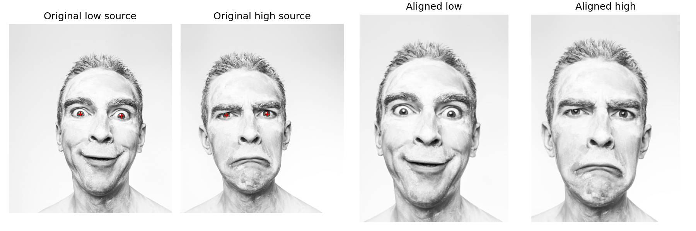
Filtering and frequency analysis
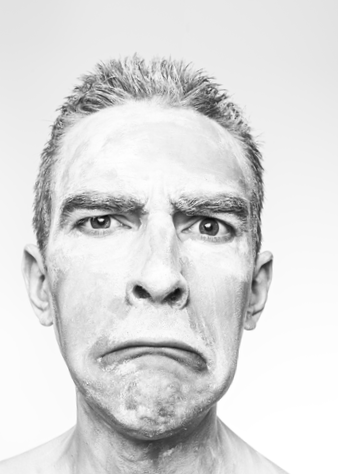
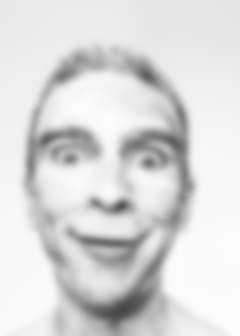
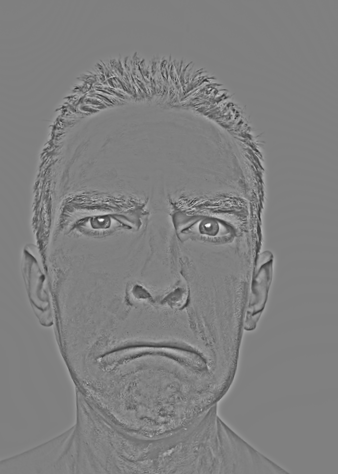
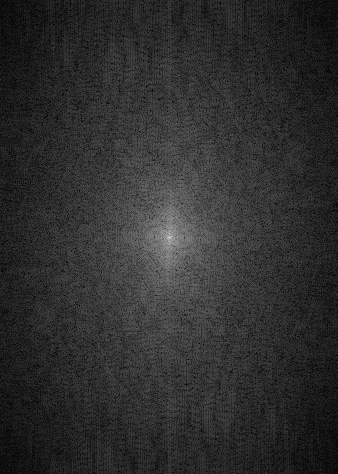
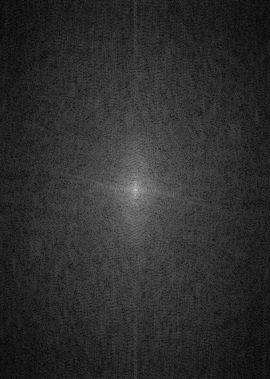
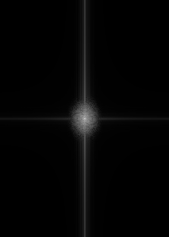
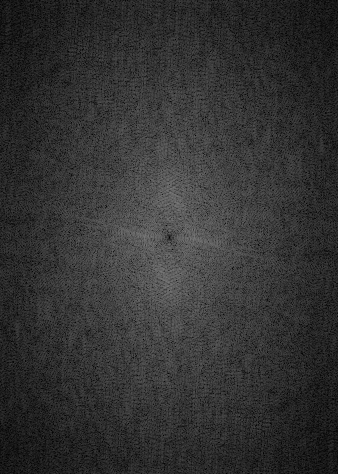
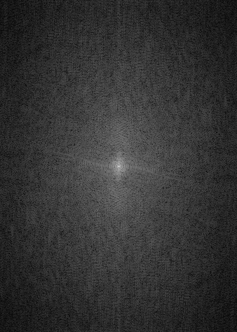
Spectra: log(1 + |fftshift(fft2(image))|), with one shared display scale. FFTs use unclipped float arrays. The signed high-frequency image is centered on gray for display.
Near and far
The purpose of this section of the project is to create an image that looks different based off of your viewing distance. This is done by combining two images and using their high and low frequency parts of the image to combine them together into one. First, before we run our algorithm, we need to align the images with the provided code. For this happy and sad face image, we are aligning based off of the pupils of the eyes, as this is a pretty important facial landmark when people try to interpret the face. Then we need to extract the frequencies that we want from each image. Here we're going to extract the high frequencies from the sad face and the low frequencies from the happy face. So this is done by applying a Gaussian kernel to create a blurred image, and to extract the high frequencies, we subtract the blurred sad face from the original sad face, similar as before, to get the high frequencies. Then we combine the high-frequency image of the sad face and the low frequencies of the happy face. We can visually see this is happening through the FFTs of each image. Originally, the happy and sad face images both have a normal amount of high and low frequencies before doing any modifications. But after we apply the Gaussian blur to the happy face, we have the low frequency of that image, and then in the FFT, we see most of the mass is near the center of the FFT, meaning that it is a low frequency. While the sad face, after applying the processing, its FFT has a dark spot near the center, meaning that its low frequencies are strongly suppressed. However, once we combine both of these into the hybrid image, we again get a normal-looking FFT with some mass in the center representing the low frequencies and other high-frequency signals. We use a log scale for the FFTs since the low frequency can dominate the majority of the FFT signal and you would not be able to see meaningful magnitude on the rest of the spectrum. In the final result, we see that if you look at this hybrid image up close, you can see the frowning face, but if you look at it from far away, you see the happy face. This is exemplified as in the near image with the enlarged image, we see the sad face, but when we reduce the image down to almost 64 pixels, we more clearly see the happy face instead, as the high frequencies is not easily picked up. For the filter choices for the happy sad face, I chose a less aggressive blur on the low frequency happy face to preserve the structure of the smile and features of the face, while also not taking out too much of the high frequency image to preserve its overall structure of the frown. However, the high frequency content of this image is not too strong, so I had to amplify it artificially by applying a weight of 1.35 on the high frequency, so it's more visible up close.
Code · low-pass and high-pass layers
sigma_low = pair["sigma_low"]
sigma_high = pair["sigma_high"]
size_low = 2 * int(np.ceil(3 * sigma_low)) + 1
size_high = 2 * int(np.ceil(3 * sigma_high)) + 1
g_low = cv2.getGaussianKernel(size_low, sigma_low)
g_high = cv2.getGaussianKernel(size_high, sigma_high)
low = convolve2d(low_image, g_low @ g_low.T, mode="same", boundary="symm")
high = high_image - convolve2d(
high_image, g_high @ g_high.T, mode="same", boundary="symm")
high = pair["high_weight"] * high
hybrid = low + highOther examples
Derek + Nutmeg
Dog + tiger
In the other examples with Derek and Nutmeg, we can see that the combined image has features of the cat face up close, but when we look far away or reduce the size of that image, we see instead the picture of Derek. And similar for the dog and tiger, we see the lines of the tiger's face up close, while if we reduce the size of the image or look farther away, it looks more like a dog. Both these image needs its own tuning, so we need to tune the blurring of the low frequency, and then also how much blurring we need to subtract from the original image for the high frequency, right? So the sigma low is how much we blur, sigma high is how much we blur the image and subtract that from the original. The tiger has a lot high frequency in its face due to its lines in its face. So I needed to downscale the weight of the high frequency image when adding them by a factor of 0.85 to make the effect a little bit more clear when we try to look further away, that it is a dog.
Gaussian and Laplacian stacks
6 levels · 300 × 300 at every level · successive blur σ: 2, 4, 8, 16, 32
Lᵢ = Gᵢ − Gᵢ₊₁ (i = 0…4); L₅ = G₅
I = L₀ + L₁ + L₂ + L₃ + L₄ + L₅
In this project, we use stacks instead of pyramids, and the main difference between those two is that the stack will keep every level at the original resolution, while a pyramid normally downsamples between levels. Moreover, we exploit the fact that if you convolve with a Gaussian kernel multiple times, it is still the same thing as convolving once with another Gaussian kernel with a different standard deviation. Particularly, Gaussian variances add, so the effective sigma is the square root of the sum of the squared sigmas. This means that we can convolve the apple image with the Gaussian kernel five times, and each time we're getting a Gaussian blurred image, and same goes for the orange. Here we use successive Gaussian blurs of sigma 2, 4, 8, 16, and 32 that are all applied to the previous level. And then we also look at the Laplacian band, which is the difference between these neighboring Gaussian levels. The last level will store the remaining blurred image, which in this case is G5, since we have 6 total images that we're looking at. When we sum all the Laplacian levels, the neighboring Gaussian terms cancel, and adding the final residual just leaves G0. This means that if we add together all the levels of the Laplacian stack, we should be able to reconstruct the image, or reconstruct G0. And we see this empirically as we have a reconstruction error within floating point tolerance.
Apple
Gaussian stack

Laplacian stack
Orange
Gaussian stack
Laplacian stack

Oraple
Gaussian stack


Laplacian stack


Signed bands: zero = gray, with a shared display scale across apple, orange, and oraple at each level. Residuals use [0, 1].
Figure 3.42, panels (a) through (l)

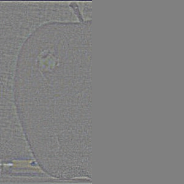

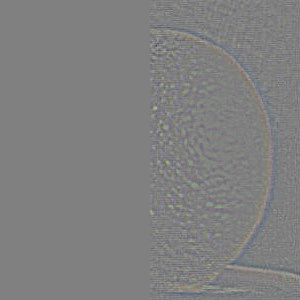

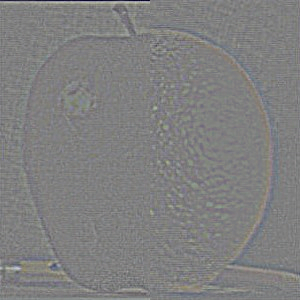


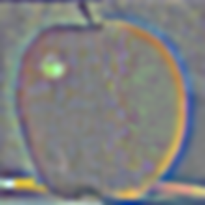


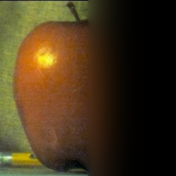


The earlier Laplacian stack images show finer changes in detail, such as border changes, while the later stacks will show more broad changes. And obviously the last image is just the most blurred original image. The images in the Laplacian stack look gray because for visualization, I represent zero difference as gray. However, the rescaling is only for visualization, as reconstruction uses the original signed values for mathematical equivalence. At each level, the apple, orange, and oraple previews share a scale so their differences can be compared. I also reconstructed Figure 3.42, where the columns show the masked apple contributions, masked orange contributions, and their combinations. The first three rows show levels 0, 2, and 4, while the last row sums all six levels, including those not shown.
Code · Gaussian and Laplacian stacks
def gaussian_stack(image, levels, sigma):
stack = [image]
for i in range(1, levels):
level_sigma = sigma * 2 ** (i - 1)
size = 2 * int(np.ceil(3 * level_sigma)) + 1
kernel_1d = cv2.getGaussianKernel(size, level_sigma)
kernel = kernel_1d @ kernel_1d.T
blurred = np.zeros_like(image)
for channel in range(3):
blurred[:, :, channel] = convolve2d(
stack[-1][:, :, channel], kernel, mode="same", boundary="symm")
stack.append(blurred)
return np.array(stack)
def laplacian_stack(gaussian):
stack = []
for i in range(len(gaussian) - 1):
stack.append(gaussian[i] - gaussian[i + 1])
stack.append(gaussian[-1]) # Keep the remaining low frequencies.
return np.array(stack)Multiresolution blending
In order to do multi-resolution blending, we need to create a Gaussian-blurred mask that weights the two Laplacian stacks at each level for each image, and summing will just simply reconstruct the blended image. So for the oraple, we start with a very simple mask where half of the mask is white and half of it is black, split along the vertical center of the image. Here I define white in the mask to correspond to taking the pixels from the apple image and black comes from the orange image, while gray means that we're going to blend the pixel accordingly. This means that low-frequency content blends across a wider transition, while high-frequency content uses a sharper mask to preserve detail. For the oraple, we start with the mask level zero being completely unblurred. However, for visual reasons, I wanted to start with the first level of the Gaussian blurred mask to be slightly blurred to increase the amount of blending with the sunflower.
The oraple


Gaussian mask stack


White: apple · black: orange · 6 levels · starting σ = 2
Coconut + sunflower


Ellipse: (97, 82, 216, 211) · mask preblur σ = 4
300 × 300 canvas · 5 levels · starting σ = 2
tomato (pizza) slice on a tomato slice


Mask vertices: (77, 39), (135, 28), (213, 42), (162, 159)
300 × 300 canvas · 5 levels · starting σ = 2
For my two custom images, I used a coconut placed on a sunflower and a tomato pizza slice from Ceres put on an actual tomato slice. For the coconut, I used an ellipse mask, which is supposed to capture the roundness of the coconut and resized and positioned it to fit inside the sunflower’s seed center. For the slice, I used a kite polygon and scale the pizza slice so that the tip aligns roughly with the center of the tomato. Unlike the oraple’s straight seam, these masks follow an outline of the inserted object, so the remaining artifacts appear around that outline. Within both of these images, we can see that they blend pretty well, especially around the edges of the coconut. We can see the blending of the borders with the sunflower, and with the pizza, we can also see that the image is blending with the edges of the pizza. And there is a slight visual artifact with the pizza blending because there is a stark difference in color on the right edge of the pizza slice, from red to a whitish color.
Coconut + sunflower: contributions by level


Signed contributions share a display scale within each row. The final row contains the low-frequency residual.
Seeing the contributions by each level in the coconut sunflower image, we see how the blended image is constructed. So first, the level zero of the mask already has a Gaussian blur applied to reduce the rough edges in the blended image. But however, through the structure, we see that the stark differences in the image are blended more sharply, meaning that the high-frequency content is combined with a less blurred mask, while the low-frequency content is combined with a much more blurred mask. This means that the overall color change between the coconut and inside of the sunflower is blended very well, while we can still see a visual difference between the edges of the coconut and the edge of the sunflower.
Code · blend corresponding levels
foreground_gaussian = gaussian_stack(foreground, levels, sigma)
background_gaussian = gaussian_stack(background, levels, sigma)
# Soften the coconut mask so even the finest band has a gradual join.
blend_mask = mask
if pair["mask_sigma"] > 0:
mask_blur = gaussian_stack(mask, 2, pair["mask_sigma"])
blend_mask = mask_blur[1]
mask_gaussian = gaussian_stack(blend_mask, levels, sigma)
foreground_laplacian = laplacian_stack(foreground_gaussian)
background_laplacian = laplacian_stack(background_gaussian)
foreground_parts = np.zeros_like(foreground_laplacian)
background_parts = np.zeros_like(background_laplacian)
for i in range(levels):
foreground_parts[i] = foreground_laplacian[i] * mask_gaussian[i]
background_parts[i] = background_laplacian[i] * (1 - mask_gaussian[i])
blended_stack = foreground_parts + background_parts
blended = blended_stack.sum(axis=0)
# boring file saving and processing :(Reflection
The coolest thing I could learn and visually see with this project was how we can create these hybrid images through manipulating the frequency content of an image in order to make it change appearance at different viewing distances or image sizes. I originally learned this concept in EE120 with frequency responses in mostly one-dimensional signals. But we can see how convolving with the Gaussian kernel suppresses high frequencies in the FFT, and subtracting the blurred image from the original gives mostly high-frequency content, as seen in the 2D FFT spectrum image.